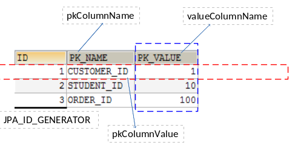

JPA 概述
- JPA（Java Persistence API）：用于对象持久化的 API，JavaEE 5.0 平台标准的 ORM 规范，使得应用程序以统一的方式访问持久层
- JPA 与 Hibernate 的关系
- JPA 是 Hibernate 的一个抽象（就像 JDBC 和 JDBC 驱动的关系）
- JPA 本质上是一种 ORM 规范，不是 ORM 框架，因为 JPA 并未提供 ORM 实现，它只是制定了一些规范，提供了一些编程的 API 接口，但具体实现要由 ORM 厂商来实现
- Hibernate 除了作为 ORM 框架以外，它也是一种 JPA 实现
- 从功能上来说，JPA 是 Hibernate 功能的一个子集
- JPA 的目标之一是制定一个可以由很多供应商实现的 API，例如 Hibernate、OpenJPA、TopLink 等
- JPA 优势
- 标准化
- 提供相同的 API，这保证了基于 JPA 开发的企业应用能够经过少量的修改就能够在不同的 JPA 框架下运行
- 简单易用，集成方便
- JPA 的主要目标之一就是提供更加简单的编程模型，在 JPA 框架下创建实体和创建 Java 类一样简单，只需要使用 javax.persistence.Entity 进行注释，JPA 的框架和接口也都非常简单
- 可媲美 JDBC 的查询能力
- JPA 的查询语言是面向对象的，JPA 定义了独特的 JPQL，而且能够支持批量更新和修改、JOIN、GROUP BY、HAVING 等通常只有 SQL 才能提供的高级查询特性，甚至还能够支持子查询
- 支持面向对象的高级特性
- JPA 中能够支持面向对象的高级特性，例如类之间的继承、多态和类之间的复杂关系，最大限度的使用面向对象的模型
- 标准化
- JPA 包括三方面的技术
- ORM 映射元数据
- JPA 支持 XML 和 JDK5.0 注解两种元数据的形式，元数据描述对象和表之间的映射关系，框架据此将实体对象持久化到数据库表中
- JPA 的 API
- 用来操作实体对象，执行 CRUD 操作，框架在后台完成所有的事情，开发者可以不用编写繁琐的 JDBC 和 SQL 代码
- 查询语言 JPQL
- 通过面向对象而非面向数据库的查询语言查询数据，避免程序和具体的 SQL 紧密结合
- ORM 映射元数据
使用 JPA 持久化对象的步骤
导入所需 JAR 包（以 Hibernate 实现为例）
- hibernate\lib\required\*.jar
- hibernate\lib\jpa\*.jar
- 数据库驱动
创建 persistence.xml，在这个文件中配置持久化单元（ JPA 规范要求放在类路径的 META-INF 目录中且文件名固定）
需要指定与哪个数据库进行交互
需要指定 JPA 使用哪个持久化的框架以及配置该框架的基本属性
persistence.xml 文件中元素含义
1
2
3
4
5
6
7
8
9
10
11
12
13
14
15
16
17
18
19
20
21
22
23
24
25
26
27
28
29
30
31
32
33
34
35
36
37
38
39
40
41
42
43
44
45
46
47<persistence>
<!-- name 属性用于定于持久化单元的名字 -->
<!--
transaction-type 用于指定 JPA 的事务处理策略
RESOURCE_LOCAL: 默认值，数据库级别的事务，只能针对一种数据库，不支持分布式事务
如需支持分布式事务，应使用 JTA: transaction-type="JTA"
-->
<persistence-unit name="JPA" transaction-type="RESOURCE_LOCAL">
<!--
配置使用什么 ORM 框架来作为 JPA 的实现
实际上配置的是 javax.persistence.spi.PersistenceProvider 接口的实现类
若 JPA 项目中只有一个 JPA 的实现框架, 则也可以不配置该节点
-->
<provider>org.hibernate.ejb.HibernatePersistence</provider>
<!-- 添加持久化类 -->
<class>beiran.bean.Customer</class>
<!--
配置二级缓存的策略
ALL：所有的实体类都被缓存
NONE：所有的实体类都不被缓存.
ENABLE_SELECTIVE：标识 @Cacheable(true) 注解的实体类将被缓存
DISABLE_SELECTIVE：缓存除标识 @Cacheable(false) 以外的所有实体类
UNSPECIFIED：默认值，JPA 实现框架的默认值将被使用
-->
<shared-cache-mode>ENABLE_SELECTIVE</shared-cache-mode>
<properties>
<!-- 连接数据库的基本信息 -->
<property name="javax.persistence.jdbc.driver" value="com.mysql.jdbc.Driver"/>
<property name="javax.persistence.jdbc.url" value="jdbc:mysql:///jpa"/>
<property name="javax.persistence.jdbc.user" value="root"/>
<property name="javax.persistence.jdbc.password" value="123"/>
<!-- 配置 JPA 实现框架的基本属性. 配置 Hibernate 的基本属性 -->
<property name="hibernate.format_sql" value="true"/>
<property name="hibernate.show_sql" value="true"/>
<property name="hibernate.hbm2ddl.auto" value="update"/>
<!-- 二级缓存相关 -->
<property name="hibernate.cache.use_second_level_cache" value="true"/>
<property name="hibernate.cache.region.factory_class" value="org.hibernate.cache.ehcache.EhCacheRegionFactory"/>
<property name="hibernate.cache.use_query_cache" value="true"/>
</properties>
</persistence-unit>
</persistence>
创建实体类，使用注解来描述实体类跟数据库表之间的映射关系
使用 JPA API 完成 CRUD 操作
创建 EntityManagerFactory（对应 Hibernate 中的 SessionFactory ）
创建 EntityManager（对应 Hibernate 中的 Session ）
1
2
3
4
5
6
7
8
9
10
11
12
13
14
15
16
17
18
19
20
21// 创建 EntityManagerFactory 对象
EntityManagerFactory entityManagerFactory = Persistence.createEntityManagerFactory("JPA");
// 创建 EntityManager 对象
EntityManager entityManager = entityManagerFactory.createEntityManager();
// 开启事务
EntityTransaction entityTransaction = entityManger.getTransaction();
entityTransaction.begin();
// 执行持久化操作
entityManager.persist(object);
// 提交事务
entityTransaction.commit();
// 关闭 EntityManager
entityManager.close();
// 关闭 EntityManagerFactory
entityManagerFactory.close();
JPA 基本注解
@Entity
- @Entity 注解用于实体类声明语句前，指出该 Java 类是一个实体类，将映射到指定的数据库表
@Table
- 当实体类与其映射的数据库表名不同名时，需要使用 @Table 注解指定数据表名，该注解与 @Entity 注解并列使用
- @Table 注解常用的属性是 name，用于指定数据表名
- @Table 注解其他属性
- catalog 属性用于指定数据库目录，通常无需指定
- schema 属性用于指定数据库模式，通常无需指定
- uniqueConstraints 属性用于设置约束条件，通常无需设置
@Id
- @Id 注解用于声明一个实体类的属性映射为数据表的主键列，该属性通常置于属性声明语句上（也可置于属性的 getter 方法之前）
@GeneratedValue
- @GeneratedValue 注解用于标注主键的生成策略，通过 strategy 属性指定。默认情况下，JPA 自动选择一个最适合底层数据库的主键生成策略（ SQLServer 对应 identity，MySQL 对应 auto ）
- 在 javax.persistence.GenerationType 中定义了以下几种可供选择的策略
- IDENTITY：采用数据库 ID 自增长的方式来自增主键字段，Oracle 不支持此种方式
- AUTO（默认值）：JPA 自动选择合适的策略
- SEQUENCE：通过序列产生主键，通过 @SequenceGenerator 注解指定序列名，MySQL 不支持此种方式
- TABLE：通过表产生主键，框架借由表模拟序列产生主键，使用该策略可以使应用更易于数据库移植
@Basic
- @Basic 注解表示一个简单的属性到数据表的字段的映射，对于没有任何标注 @Basic 注解的 getter 方法，默认即为 @Basic
- @Basic 注解的 fetch 属性表示该字段的读取策略，有 EAGER 和 LAZY 两种，分别表示主支抓取和延迟加载，默认为 EAGER。@Basic 注解的 optional 属性表示该字段是否允许为 null，默认为 true
@Column
- 当实体的属性与其映射的数据表的列不同名时需要使用 @Column 注解说明，该属性通常置于实体的属性声明语句之前（也可以置于 getter 方法之前），还可以与 @Id 注解一起使用
- @Column 注解常用的属性是 name，用于设置映射数据表的列名，此外，该注解还包含其他多个属性，例如 unique、nullable、length 等
- @Column 注解的 columnDefinition 属性表示该字段在数据表中的实际类型，通常 ORM 框架可以根据属性类型自动判断数据表中字段的类型，但是对于 Date 类型仍然无法确定数据表中字段类型究竟是 DATE、TIME 还是 TIMESTAMP。此外，String 类型的默认映射类型为 VARCHAR，如果要将 String 类型映射到特定数据表的 BLOB 或者 TEXT，可以通过 columnDefinition 属性进行设置
@Transient
- @Transient 注解表示该属性并非一个到数据表的字段的映射，ORM 框架将忽略该属性
- 如果一个属性并非数据表的字段映射，就务必为其标注 @Transient 注解，否则，ORM 框架默认其注解为 @Basic
@Temporal
- 在核心的 Java API 中并没有定义 Date 类型的精度，而在数据库中，表示 Date 类型的数据有 DATE、TIME 和 TIMESTAMP 三种精度，在进行属性映射时可以使用 @Temporal 注解来调整精度
用数据表来生成主键
将当前主键的值单独保存到一个数据表中，主键的值每次都是从指定的表中查询来获得
这种方法生成主键的策略可以适用于任何数据库，不必担心不同数据库不兼容造成的问题
1
2
3
4
5
6
7
8
9
10
11
12
13
14// name 属性表示该主键生成策略的名称，它被引用在 @GeneratedValue 中设置的 generator 值中
// table 属性表示存储生成的主键值的表名
// pkColumnName 属性表示在实体类对应的表中，该主键生成策略所对应键值的名称
// pkColumnValue 属性表示在实体类对应的表中，该生成策略所对应的主键
// valueColumnName 属性表示在实体类对应的表中，该主键当前所生成的值，它的值会随着每次创建而累加
// initialValue 属性表示生成的主键的初始值，默认为 0
// allocationSize 属性表示每次主键值增加的大小，默认为 50
(name = "ID_GENERATOR", table = "JPA_ID_GENERATOR",
allocationSize = 1, initialValue = 1,
pkColumnName = "PK_NAME", pkColumnValue = "PERSON_ID",
valueColumnName = "ID_VAL")
(strategy = GenerationType.TABLE, generator="ID_GENERATOR")
private Integer id;
JPA API
- Persistence
- Persistence 类用于获取 EntityManagerFactory 实例，该类包含一个 createEntityManagerFactory 的静态方法
- createEntityManagerFactory 方法有两个重载版本
- 带有一个参数的方法以 JPA 配置文件 persistence.xml 中的持久化单元名（ persistence-unit ）作为参数
- 带有两个参数的方法：前一个参数的含义相同，后一个参数为 Map 类型，用于设置 JPA 的相关属性，这时将忽略其他地方设置的属性。Map 对象的属性名必须是 JPA 实现框架提供商的命名空间约定的属性名
- EntityManagerFactory
- EntityManagerFactory 接口主要用于创建 EntityManager 实例
- createEntityManager()：用于创建 EntityManager 对象实例
- createEntityManager(Map map)：用于创建 EntityManager 对象实例的重载方法，Map 参数用于提供 EntityManager 的属性
- isOpen()：检查 EntityManagerFactory 是否处于打开状态，EntityManagerFactory 创建之后就一直处于打开状态，除非调用 close() 方法将其关闭
- close()：关闭 EntityManagerFactory，EntityManagerFactory 关闭后将释放所有资源，isOpen() 方法将返回 false，其他方法则不能调用，否则将抛出 IllegalStateException
- EntityManagerFactory 接口主要用于创建 EntityManager 实例
- EntityManager
- 在 JPA 规范中，EntityManager 是完成持久化操作的核心对象，实体作为普通 Java 对象，只有在调用 EntityManager 将其持久化后才会变为持久化对象。EntityManager 对象在一组实体类与底层数据源之间进行 O/R 映射的管理，它可以用管理和更新 Entity Bean，根据主键查找 Entity Bean，还可以通过 JPQL 语句查询实体
- 实体的状态
- 新建状态：新创建的对象，尚未拥有持久性主键
- 持久化状态：已经拥有持久性主键并和持久化建立了上下文环境
- 游离状态：拥有持久化主键，但是没有与持久化建立上下文环境
- 删除状态：拥有持久化主键，已经和持久话建立了上下文环境，但是已经从数据库中删除了
- EntityTransaction
映射关联关系
- 映射单向多对一的关联关系
- 映射单向一对多的关联关系
- 映射双向多对一的关联关系
- 映射双向一对一的关联关系
- 映射双向多对多的关联关系